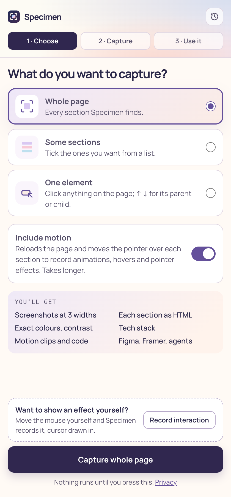
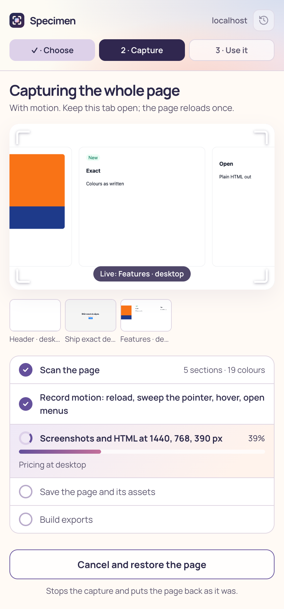

Watch it capture.
Choose Whole page and select Capture whole page. A checklist shows each part as it runs, and every screenshot appears as it is taken, at 1440, 768 and 390 px.
Include motion is on by default. Turn it off for a faster capture without the page reload. Cancel stops a run and puts the page back.

